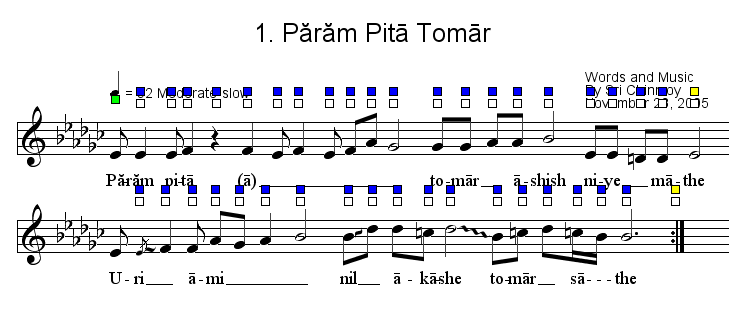

You can adjust the look of song in almost every way. You can move the notes, lines, lyrics etc. In the Mode menu you can switch between modes. Until now we were in the song editing mode. If you click on the note adjustment mode, you can move the notes with the colored squares.

In this mode with the blue squares you move the note along with the notes on its right. With the white one, you move only one
note. With the green one you adjust the position of the first note of the lines. Finally with the yellow square you can move the
notes of one line proportionally. There are several adjustment modes yet.
Finally this is the song we worked on.
You can save this song and use it in the Song Book program to create pages, or in the Song Show to create a slide show. Besides you can export the song as a MIDI music file, as an image, as a PDF, or you can print it.